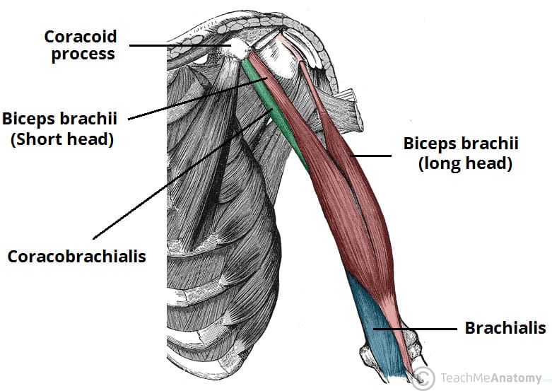
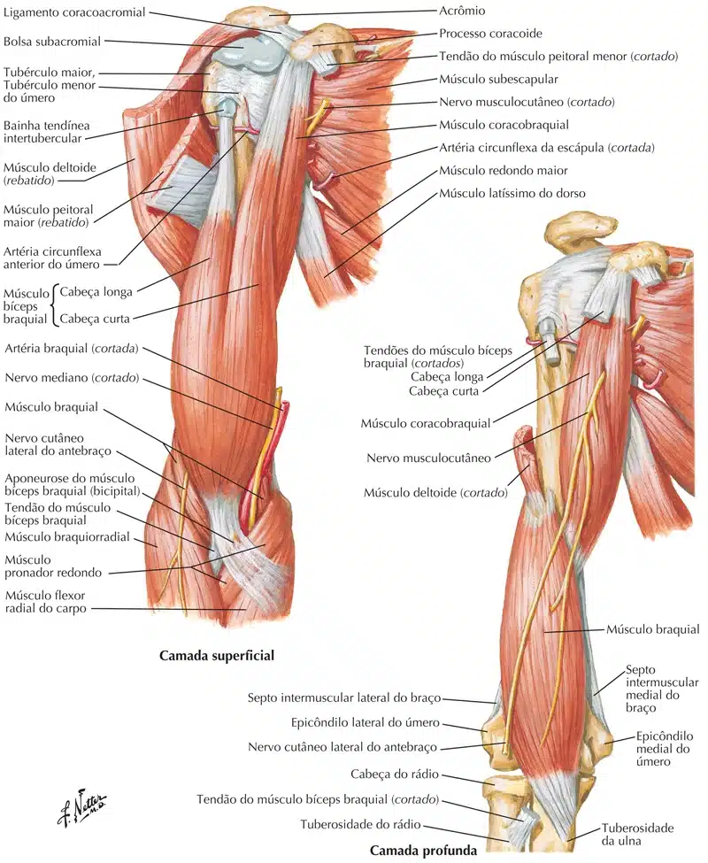
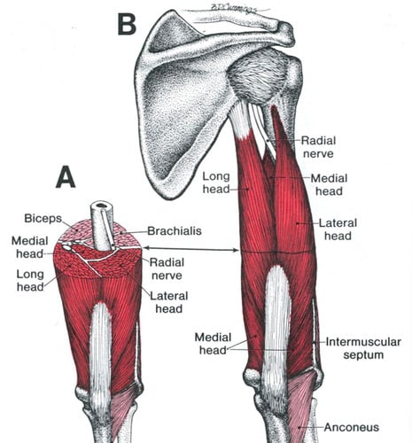
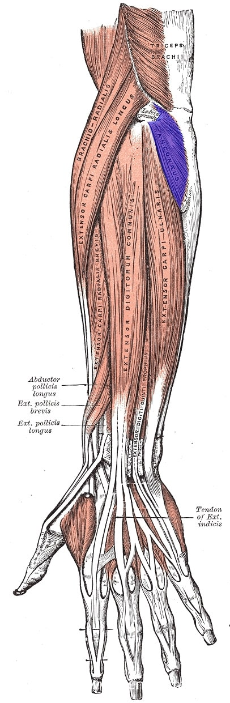
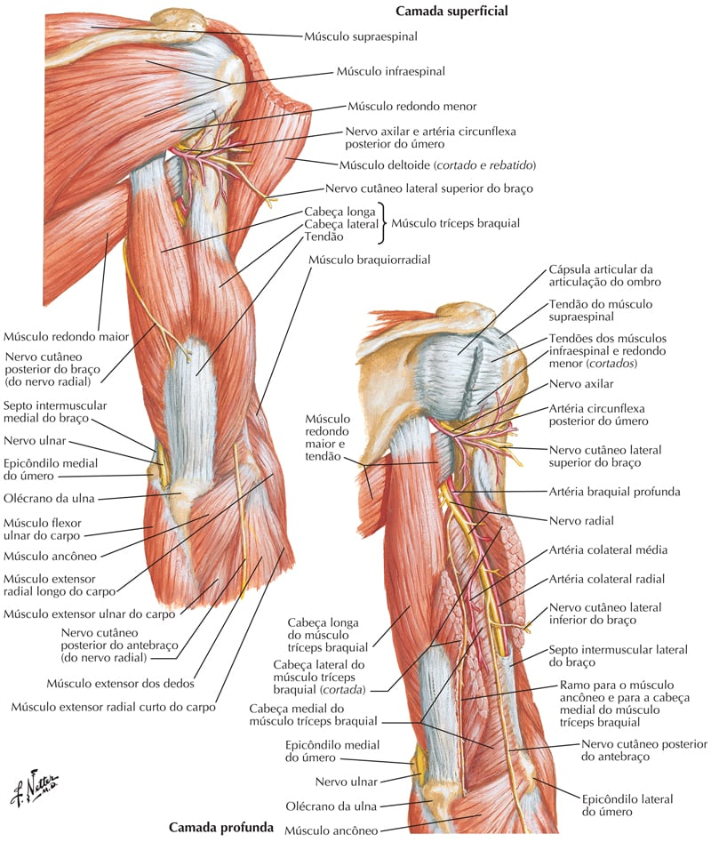
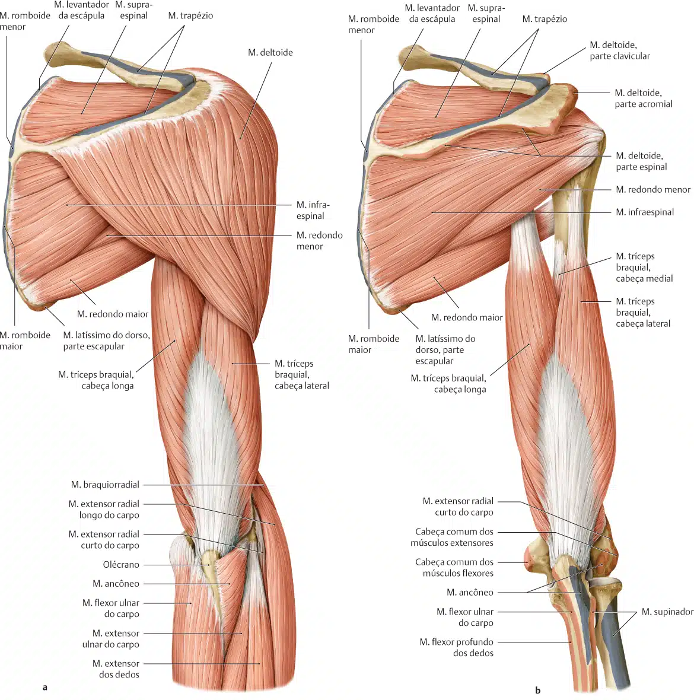
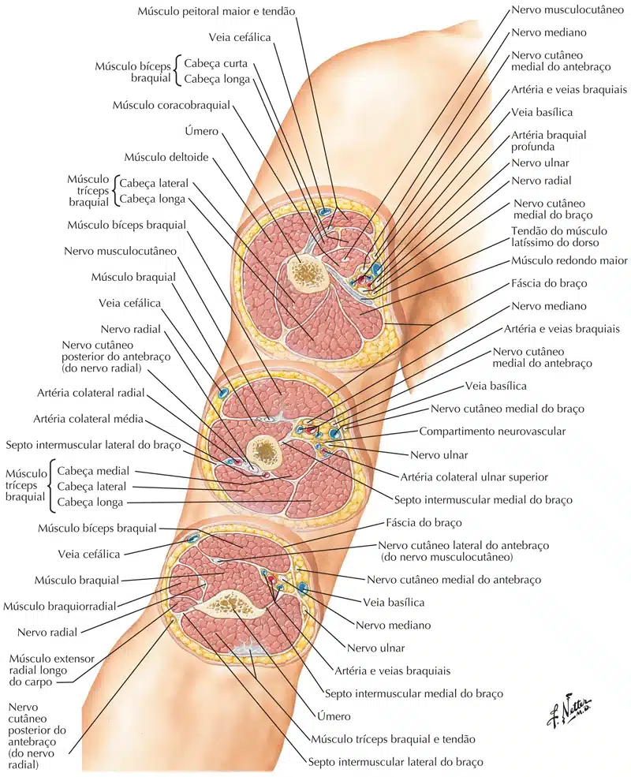

Inserção Proximal:
Cabeça Longa: Tubérculo supra-glenoidal.
Cabeça Curta: Processo coracóide.
Inserção Distal: Tuberosidade radial.
Inervação: Nervo Musculocutâneo (C5 e C6).
Ação: Flexão de cotovelo / ombro e supinação do antebraço.

Inserção Proximal: Face anterior da metade distal do úmero.
Inserção Distal: Processo coronóide e tuberosidade da ulna.
Inervação: Nervo Musculocutâneo (C5 e C6).
Ação: Flexão de cotovelo.
Inserção Proximal: Processo coracóide – escápula.
Inserção Distal: 1/3 médio da face medial do
corpo do úmero.
Inervação: Nervo Musculocutâneo (C5 e C6).
Ação: Flexão e adução do braço.

Inserção Proximal:
Porção Longa: Tubérculo infra-glenoidal.
Porção Medial: ½ distal da face posterior do úmero
(abaixo do sulco radial).
Porção Lateral: ½ proximal da face posterior do úmero
(acima do sulco radial).
Inserção Distal: Olécrano
Inervação: Nervo Radial (C7 – C8).
Ação: Extensão do cotovelo.

O músculo ancôneo é pequeno, triangular e situado na face póstero-lateral do cotovelo; em geral, apresenta-se parcialmente fundido ao músculo tríceps braquial.
Aparenta pertencer ao antebraço, mas é um músculo posterior do braço.
Inserção Proximal: Epicôndilo lateral do úmero.
Inserção Distal: Olécrano da ulna e ¼ proximal da face posterior da diáfise da ulna.
Inervação: Nervo Radial (C7 e C8).
Ação: Extensão do cotovelo.



